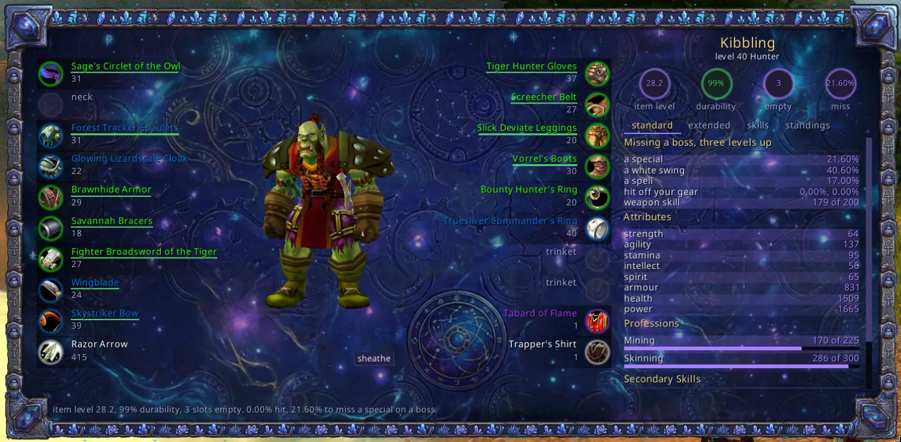
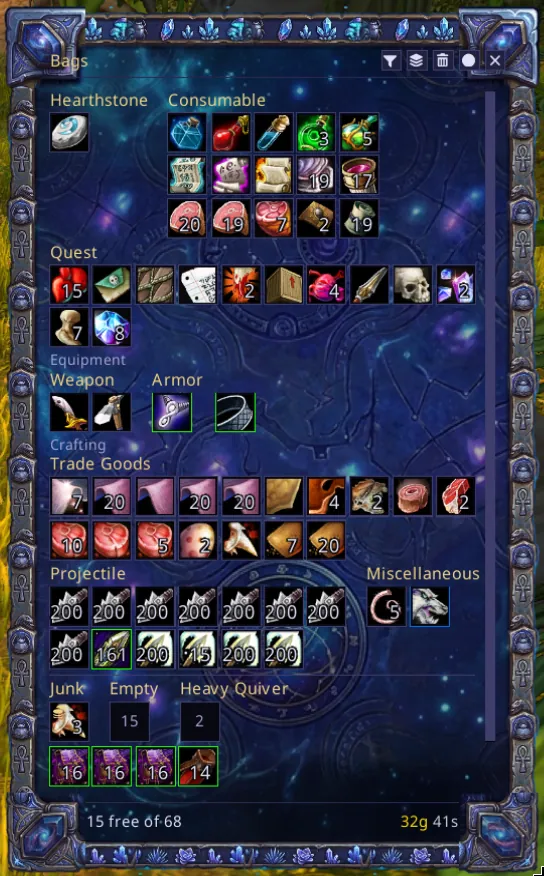

Windows
Every window in this list replaces one the client has, or fills a hole where the client has none. The ones that replace something have two switches: on draws ours, and hide puts Blizzard's in the attic and takes its key, so C opens this character sheet rather than that one.
The character sheet, which says how often you miss. One page the C key opens, the size of your monitor, with no window chrome on it. Nineteen slots in two columns, you standing full height in the gap, and a column down the right holding what your gear adds up to. That column has four tabs and they change the list without taking the gear off the screen: standard, which is your hit, your five attributes and your trades; extended, the resistances and the four rating groups; skills; and standings.
No client on either of these versions has ever put your miss chance on the character sheet, because the client knows your hit rating and not your hit chance. This works it out: how often a special, a white swing and a spell go wide against a boss and against your own level, with the hit off your gear already taken off. Each of those numbers is the hit you still want, so there is no second line saying it twice. The badges at the head of the column are the four numbers the client's own sheet has never had: item level, durability, empty slots and that miss chance, and each slot draws its own durability as a line under it. The skills tab prices what a weapon skill under the cap for your level is costing you. Right click a slot to take a piece off, drag one on to put it on, and neither works in a fight because the client will not allow it. The window itself does open in a fight.
/wui character, character on|off, character hide on|off
/wui character gear, stats, skills
/wui reputation, your standings in a window of their own; reputation list
/wui character trace on|off, what each click on a gear square did{kind=link}

And the same sheet drawn for somebody else. Inspect on a player's right click menu opens this page for them instead of Blizzard's three-tab window. Same twenty rows, same figure, same layout, in a window you can drag next to your own sheet and read the two side by side.
Four things about it are different and all four are the client rather than a choice. Their durability, their weapon skills and their miss chance are numbers the server does not send about anybody but you, so the badges over their name are the two it does send and that nothing in the game will add up for you: how many of their slots carry an enchant, and how many of their sockets have a gem in. Both go red the moment one is missing, and the hover names the slot. The column beside them has two tabs rather than four, the pieces with something on them and their talent trees, because the other two are the same numbers the server withholds. Nothing on the page can be clicked to move an item, for the obvious reason; shift over a piece links it into chat. And it opens, closes and moves in the middle of a fight, which your own sheet needs a key press to do.
An inspect needs them inside about twenty-eight yards and the server answers when it feels like it, so the page comes up empty and fills in. The line along the bottom says which of the two is happening.
/wui inspect, whoever you are targeting; /wui inspect <name> for somebody in your group
/wui inspect on|off, inspect hide on|offA socketing window that knows what you are carrying. Shift-click a piece on the gear page and it opens on that piece's holes with every gem in your bags underneath, the ones that go in the hole you are pointing at first. Click a hole, click a gem, press apply. Blizzard's own frame gives you three holes and a drag: you find the gem in your bags yourself, the sparkle that says it matched is gone in half a second, and the gem you are about to destroy is named nowhere. Here the line beside the apply button says what applying costs you, by name and by count, and whether the item would pay its socket bonus afterwards, which is the number you are socketing for. Right click a hole to take a gem back out. Nothing is spent until you press apply. TBC only: Classic Era has no sockets, and on that client this part registers no event at all.
/wui sockets on|off, sockets hide on|off, sockets gemsGear sets, on the sheet you already have open. Named sets of gear, saved from what you are wearing. Under every piece on the character page is a row of small circles, one per set, and the big disc beside them stays what you have on right now. A circle holds that set's piece for that slot: full strength when it is something other than what you are wearing, dimmed when it agrees with the disc, a hollow ring when nobody has told that set about the slot, and a barred ring when the set takes the slot empty on purpose. After a swap, any circle still at full strength is a piece that did not make it on.
Click a circle to take what you are wearing into that set. Drop a piece from your bags onto one to name something you are not wearing, so a set can hold the helmet sitting in your bank. Drag a circle off its row to clear it. None of it moves an item: a set is a list, and only wearing one touches your bags.
Right click a circle for the fourth state. It cycles: a slot holding a piece goes to the barred ring, the barred ring goes back to a hollow one, and a hollow one goes to the barred ring again, so two presses put the slot back where you found it. The barred ring is how a set takes a piece off you. A hollow ring is a slot the set has no opinion about and will leave exactly as it is, which is what makes a five piece resist set five pieces rather than a change of clothes. Hover a circle and the box says which of the two it is and what each button does.
The toggles are the stack at the top left, one per set, each wearing the icon of the spec it is worn for. Press one and the set goes on, and the line that comes back says what moved, what was already on and what it could not find. A set may name one of your two talent groups, and pressing that one switches your talents first and puts the gear on after.
Right click a toggle to save everything you are wearing into that set. That is how a set is brought up to date after you replace a piece: one press instead of nineteen circles, and it says what it took. Wearing a set that names nothing at all is refused and the line points back at this.
Under them sits one more toggle, a ring with a plus in it instead of a spec icon, and that one is drawn before you have saved anything. This is where the first set comes from. Press it and a small window asks for a name, which starts out as the spec you are standing in, so pressing enter is usually all you want. One tick box under the name says whether the new set starts from what you are wearing. Leave it ticked and the set is a photograph of all nineteen slots. Take it off and the set is made with nothing in it, which is what you want for a five piece resist set you are going to build by clicking circles. The save button stays dim while the name is blank or already in use, and the line under it says which.
Armour cannot be equipped in a fight and the client refuses it, not the addon. Weapons can, so a weapon swap in a set works mid pull.
/wui set, the sets on this character and how much of each you have on
/wui set save <name>, /wui set wear <name>, /wui set forget <name>
/wui set spec <name> <group|none>, /wui set swap <group>, /wui set undoA spell book with one row per spell. Every spell you know, one row each, and the button beside the rank folds out the ranks you know. What you pick is what the square on your bar holds.
/wui spellbook, spellbook on|off, spellbook hide on|off, spellbook ranksA talent window with all three trees side by side. Nothing to scroll, every talent on the screen at once, and what unlearning them would cost along the bottom. A hunter's pet gets a tab instead of Blizzard's Beast Training window.
/wui talents, talents on|off, talents hide on|off
/wui talents trees, talents cost, talents pet, talents pet on|offA quest log three columns wide. Every quest you are on down the left, grouped by zone. In the middle, what this one wants, or a map of where it wants it. On the right, what it pays.
/wui quests, quests on|off, quests hide on|off, quests tracker on|off
/wui quests where, quests drops, quests partyA world map with every zone down the left. The zone you picked beside it with Questie's markers and your group on top, and a line under it saying who the zone is for. Where a quest's turn-in went is on it for every quest you have finished.
/wui map, map on|off, map hide on|off
/wui map zones, markers, turnins [name], group
/wui map places, map places <kind> on|offA dungeon log, where there has never been one. Neither of these clients has an adventure guide. Shift-L opens a shelf of dungeons, each wearing its own loading screen; click one for three columns. Every boss in the game down the left, grouped by dungeon and in level order, so the column answers "what should I be running now" without a single click. In the middle, the dungeon's own map, cut into its floors, with a numbered mark per boss. Neither client will hand that map over: the 1.15 one has no dungeon maps in its map tree at all and the 2.5 one has a hundred and four of them and files art for none, so the picture is drawn from the tiles both of them ship all the same. On the right, what that boss drops, in the client's own grade colours with the client's own tooltip on every row. Forty dungeons, two hundred and thirty seven bosses, and every item id in the book generated from Questie's databases rather than typed, then checked against the client again when the row is drawn: a drop the client disagrees with is left out instead of shown.
The marks are yours. No database on either client says where a boss stands inside an instance, so the addon writes down where you were standing the first time you loot each one, and the map fills in as you run the place. Any drop the book did not have goes down beside it, which is how the Outland half of the loot arrives, because the database this was generated from does not carry it.
/wui dungeons, dungeons on|off, dungeons key <key|none>
/wui dungeons book, maps, shelf, seen, here, forgetOne bag window instead of five. What you carry sorted into the piles the client already files it under, and the free slots counted along the bottom. While a vendor is open the window grows a row that sells your greys and pays for your mending, marks what the sale will take and dims what it will not.
/wui bags, bags on|off, bags hide on|off, bags columns <6-16>, bags hover <0-500>
/wui bags count, bags stack, bags clear
/wui bags session [name], bags session clear{kind=link}

A merchant window with the whole rack in it. Everything the vendor has at once, in the same piles and the same squares as your bags. The client shows ten at a time behind an arrow.
/wui merchant on|off, merchant hide on|off, merchant stock, merchant soldA mail window that says who you are writing to. A quick list of the people you mail down the left, the recipient coloured green for one of your own characters, blue for somebody you know and red for a stranger before you press send, and more than twelve attachments split across as many mails as it takes. Right click a stack in your bags to attach it.
/wui mail, mail on|off, mail hide on|off, mail bags on|off
/wui mail fav|unfav <name>, mail favs, mail warn on|offA chat window, and one tab for the people you play with. Name your wife, your kids or your guild officers in /wui and every line any of them says, in any channel, is copied to one tab of its own, together with the whispers you send them. The tab is not drawn until there is a name on the list. Beside it are two more: everything anyone said, and whispers on their own. Nothing else is in it. Loot, experience, system text and every addon's output stay in Blizzard's window, which is not hidden and not unregistered, because there is no safe way to tell those lines apart from the ones this window already drew. The conversation is taken out of Blizzard's frames through FrameXML's own message filter, so one tick box puts it back with no reload. Names are class coloured, a click on one answers it, item links still work, and nothing fades out after two minutes. A right click on a conversation closes it, a right click on the lines of any room opens a box you can copy them out of, and what this addon says has a room of its own beside the System room.
/wui chat, chat on|off, chat room [name], chat claim, chat forget [yes]
/wui chat close <name>, chat copy
/wui group, group new <name>, group <group> add|remove <name>, group <group> partyA voice channel joined when you log in. Pick your party or raid channel, or any community or guild stream you are in, the same list the client's own Chat Channels window puts a voice button on. The addon activates it at login and asks again whenever it could have appeared, which for a party channel is when you group up and for a community one is when the first person joins. It only ever joins: nothing here leaves a channel, mutes anyone or moves a volume. Blizzard's voice chat has no channels you can name, so what there is to pick is short, and /wui says so.
/wui voice, voice group|off, voice join, voice who, voice whyThe game menu Escape opens, drawn in this addon's palette rather than the client's parchment, with the addon's own button on it.
/wui menu, menu on|off